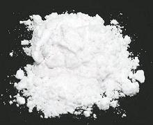

 |
BuChim PowderKorea - BuChim Garu | ||||
| Makes: Effort: Sched: DoAhead: |
3 cups * 5 min Yes |
Mixes of this sort are widely used in Korea for the famous Korean Pancakes, and for coating items to be pan fried. It is commercially available, but easy to make. | |||
|
|
2 1/2 1/2 1 1/4 1/4 1/4 |
c c c t t t t |
Flour, Allpurp Cornstarch Rice Flour Baking Powder Garlic Powder Pepper Salt |
Make - (5 min)
|